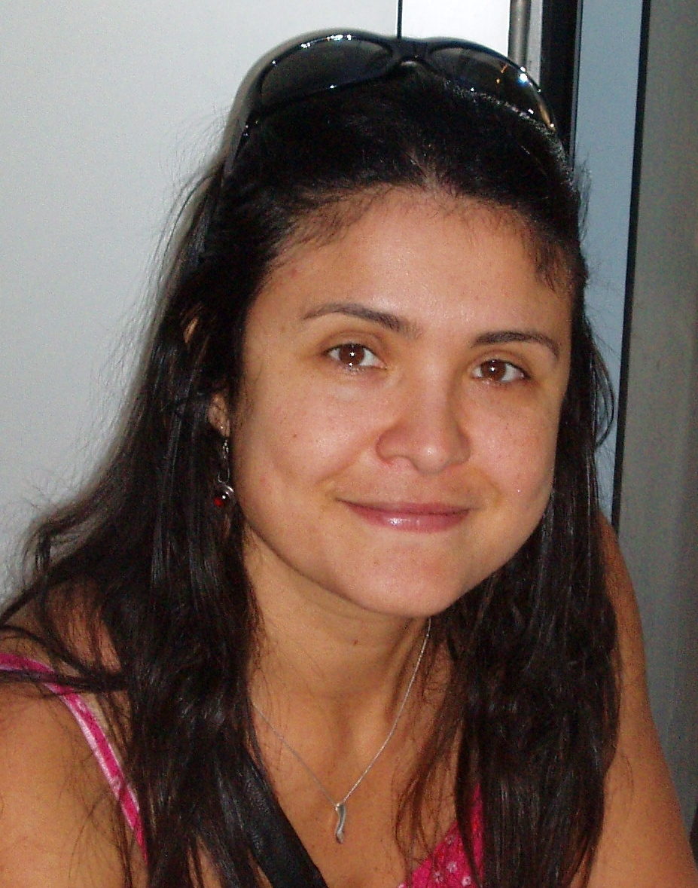

Nelly is a Senior Lecturer in the CS Research Group in Aston University, in Birmingham, UK. Before joining Aston University, Nelly was a Marie-Curie Fellow in Inria, France (2011- 2013). Nelly’s research spans Software Engineering and Self- adaptive and Autonomous Systems. In Software Engineering, Nelly is best known for her work on decision-making under uncertainty, requirements-aware systems and runtime models. She is a recipient of a Leverhulme Fellowship in the UK (2019- 2020). She has also received the Best Paper awards in the
international Conferences MODELS and RE (both in 2019) and also other previous nominations. Nelly has Chaired the conferences such as SEAMS 2014 and ICAC 2018. She has also run and founded several workshops such as AIRE (Workshop on the synergies of AI and RE) and the Requirements@run.time in the RE Conference and, also the workshop Models@run.time (in the MODELS Conference). Currently, Nelly’s research focuses on decision-making under uncertainty and explanation using machine learning techniques. As such, she currently leads the research projects and grants Quantum using Bayesian Sur- prises (2019-2020, Leverhulme, UK and Inria, France ) and Twenty20Sight (2020-2023, EPSRC, UK).